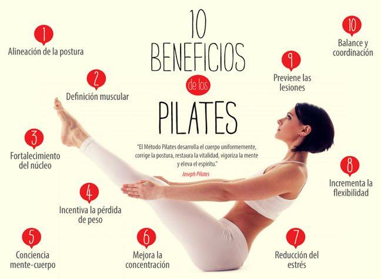

|  |
¿Cuáles son los beneficios principales del Pilates?
- ¿Cómo puede ayudar el Pilates a mejorar la postura?
- ¿Qué músculos se trabajan con frecuencia durante una sesión de Pilates?
- ¿Es el Pilates adecuado para todas las edades y niveles de condición física?
|
|
¿Cuál es el papel de la respiración en el Pilates?
- ¿Cómo se realiza correctamente la respiración durante los ejercicios de Pilates?
- ¿Qué beneficios aporta la respiración controlada al practicar Pilates?
- ¿Qué diferencias hay entre la respiración en Pilates y en otros tipos de ejercicios?
|
|
¿Cómo puede ayudar el Pilates a mejorar la flexibilidad?
- ¿Cuáles son algunos ejercicios de Pilates que se centran en mejorar la flexibilidad?
- ¿Qué precauciones se deben tomar para evitar lesiones al trabajar en la flexibilidad con Pilates?
- ¿El Pilates es útil para personas que practican deportes que requieren flexibilidad, como la danza o el
yoga?
|
|
¿Cómo promueve el Pilates el equilibrio entre la mente y el cuerpo?
- ¿Qué técnicas de Pilates se utilizan para mejorar la concentración?
- ¿De qué manera el Pilates puede contribuir a la gestión del estrés?
- ¿Qué impacto tiene el equilibrio mente-cuerpo en la salud general?
|